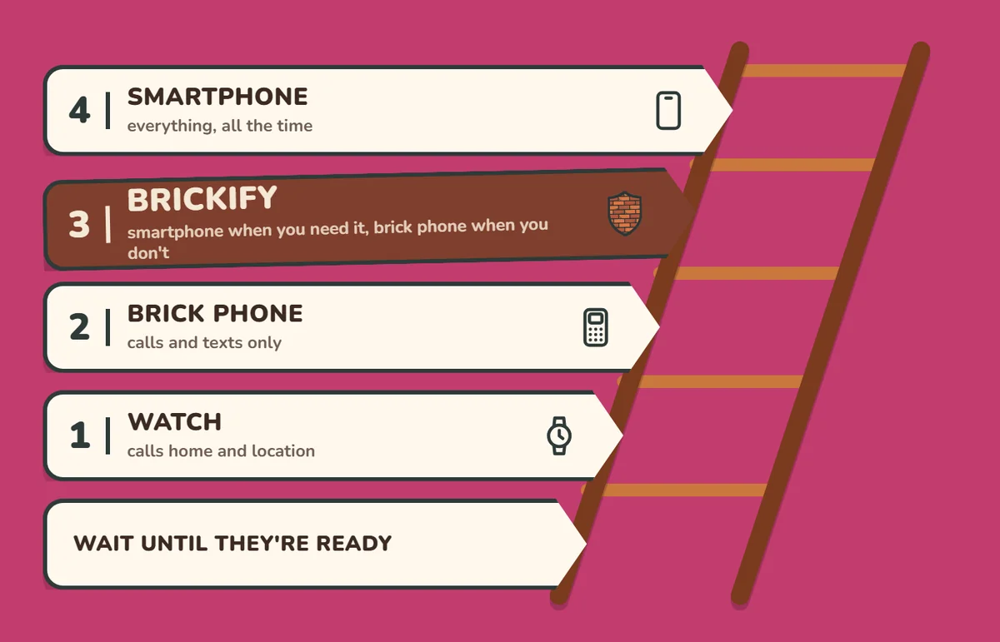

The situation
Since 29 June 2026, schools in England must have regard to statutory DfE guidance that says they should be mobile phone-free by default, and they were expected to follow it from 1 September.
Pupils shouldn't have their phones in lessons, between lessons, at break or at lunch, and Ofsted now looks at phone policies at every inspection. Most parents welcome it. But the school's rules stop at the gate. The walk in, the bus home, the evening and bedtime are still ours to sort out. So parents are doing what parents do: looking for something practical. For a lot of families, that's a brick phone.
The problem with a brick phone
A basic phone does calls and texts well, and the battery lasts for days. For some children that's exactly right.
For many 11 and 12-year-olds, though, it means no maps for the walk or the bus, no music, no school apps (many secondaries now use them for homework and timetables), and no camera for the school trip. It's a second device to buy, charge and lose, and they'll probably outgrow it by spring.
It also doesn't teach anything about living with a smartphone. It just postpones that lesson to the day they get one, often with no rules at all.
Brick phone vs Brickify
| Feature | Brick phone | Brickify |
|---|---|---|
| What it costs | About £10–£15, plus a SIM | £4.99 once, on a phone you already own, plus a SIM |
| Calls and texts | Yes | Yes |
| Maps, music, school apps | No | Only the ones you allow |
| A second device to charge and lose | Yes | No |
| Changes with the time of day | No | Yes, profiles switch on your schedule |
| Grows with your child | No, you replace it | Yes, open one app at a time as trust grows |
| Override | Not needed | PIN plus a second factor |
| What it looks like | An obvious basic phone | An ordinary phone |
| Where the brick phone wins | No internet at all, a long battery, and no spare smartphone needed | Brickify doesn't filter websites inside an app you've allowed |
By the start of secondary school, most children already have a smartphone: ownership jumps from 56% at age 10 to 83% at age 11 (Ofcom, 2026). So for most families the question isn't whether, but what's switched on, and when.
Set it once
You build the schedule once, when you're calm: School, Home, Bedtime, Weekend. After that the phone switches itself. There's no card to tap, no setting to re-edit every morning, and no nightly negotiation about five more minutes.
Nobody needs willpower at 9pm, not your child and not you. If you do need to open it up early, it takes your PIN and a second factor, so it's a decision rather than an impulse. More on that in why willpower isn't a strategy.
Every family's week is different
Brickify gives you the flexibility to set up the smartphone to meet your family's needs. You might be any combination of these illustrative examples!
- The sporty kid: match day, Saturday 8am to 1pm, opens maps, music and texts. Bedtime is calls only.
- The theatre kid: rehearsal opens voice memos, scripts and music. Show week is calls only from the half.
- The commuter: maps, bus times and music on the journey, calls and texts at school, a little more at home.
- The martial artist: grading-week evenings are saved practice videos and a timer, nothing else.
- The boarder: weekday evenings match the house rules, exeat weekends open up.
- The grown-ups: a 10pm wind-down with news and social off until 8am.
See more example weeks in our Guides.
The questions parents actually ask
"Won't they find a way round it?"
A determined child might, and any app that promises otherwise isn't being straight with you. Brickify uses the phone's own system-level controls: Apple's Family Controls on iPhone and Device Owner mode on Android, not an app that can simply be closed.
Setup walks you through closing the side doors: a Screen Time passcode and app deletion turned off on iPhone, and every browser and the App Store blocked. If protection is removed or the phone stops checking in, you get an email.
What it can't stop: a factory reset, websites inside an app you've allowed, and, in Android standard mode, someone switching it off in Settings. It's all listed on our Known limitations page.
"Isn't this just Screen Time with extra steps?"
Not quite. On iPhone, Brickify sits on the same Apple framework as Screen Time, which is exactly why it's hard to get round. What it adds is everything around it: several profiles that swap themselves through the week, a PIN plus second factor to override, alerts, a guided setup, and the same app on Android for split-platform families.
If your child is under 13 on Family Sharing and one Downtime schedule is enough, use Screen Time. It's free and it's good.
"My child will be the only one."
Probably not. According to Smartphone Free Childhood, more than 200,000 children are covered by its Parent Pact. Plenty of children are on limited phones or none. And a Brickified phone doesn't announce itself. It looks like any other phone; fewer apps work at certain times, that's all.
On the same side as the movement
Brickify isn't a rival to brick phones or to Smartphone Free Childhood. If you've signed the Pact and can wait until 14, wait. That's a good choice.
Brickify is for families who've decided a phone is needed now, for the journey, a club or two homes, and for children who already have a smartphone that needs to be quieter. It also helps at 14, when the Pact ends: instead of going from nothing to everything overnight, open one app at a time. Same goal: a childhood that isn't run by a phone.

The school has 8:30 to 3:30. Brickify helps with the rest. £4.99 once. Check your phone works.
Ready to Brickify it?
On your schedule. One-time purchase, no tracking.